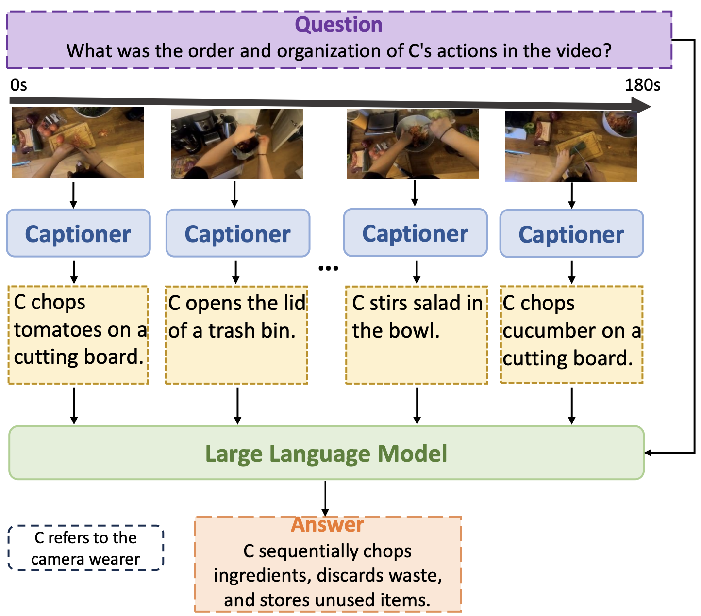
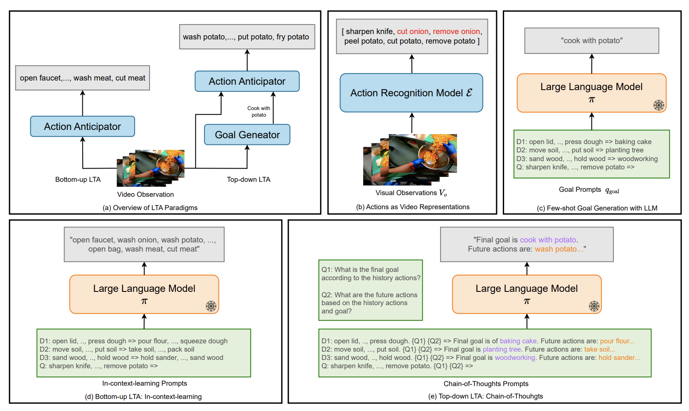
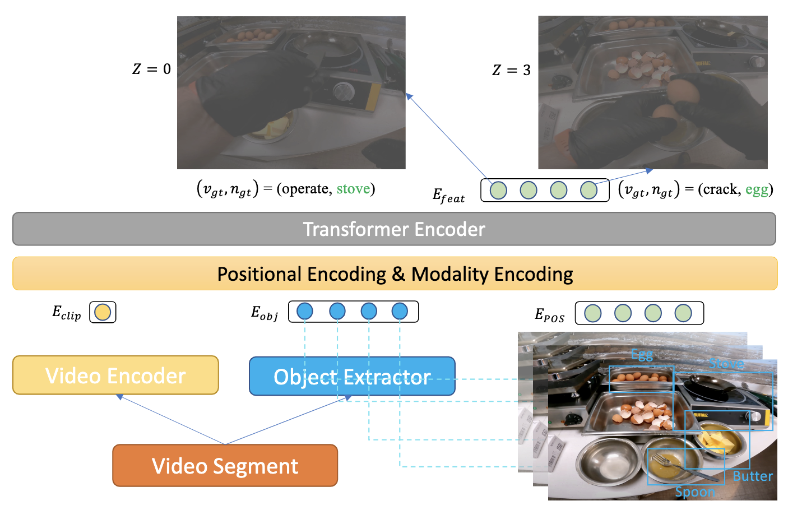
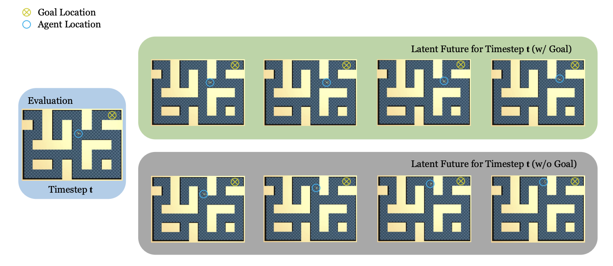

Research
I'm boradly interested in Computer Vision, Multimodal learning and Robotics. Currently, I'm mainly
working on video understanding, with a focus on leveraging foundation models (LLMs, VLMs, etc.) to
solve multiple video understanding tasks. I'm also interested in offline decision making, especially
learning from videos. I believe the commonsense knowledge encoded in foundation models would help
solve robotic tasks faster and more robustly.
|
|

|
A Simple LLM Framework for Long-Range Video Question-Answering
Ce Zhang*, Taixi Lu*, Md Mohaiminul Islam, Ziyang Wang, Shoubin Yu, Mohit Bansal, Gedas Bertasius
arXiv, 2023
We present LLoVi, a language-based framework for long-range video question-answering (LVQA). LLoVi decomposes LVQA into two stages: (1) visual captioning by a short-term visual captioner, and (2) long-range temporal reasoning by an LLM. We did thorough empirical analysis on our proposed framework. LLoVi achieves state-of-the-art performance on EgoSchema, NExT-QA, IntentQA and NExT-GQA.
|
|

|
AntGPT: Can Large Language Models Help Long-term Action Anticipation from Videos?
Qi Zhao*, Shijie Wang*, Ce Zhang, Changcheng Fu, Minh Quan Do, Nakul Agarwal, Kwonjoon Lee, Chen Sun
arXiv, 2023
We use discretized action labels to represent videos, then feed the text representations to LLMs for long-term action anticipation. Results on Ego4D, EK-55 and Gaze show that this simple approach is suprisingly effective.
|
|

|
Object-centric Video Representation for Long-term Action Anticipation
Ce Zhang*, Changcheng Fu*, Shijie Wang, Nakul Agarwal, Kwonjoon Lee, Chiho Choi, Chen Sun
WACV, 2024
We proposed ObjectPrompts, an approach
to extract task-specific object-centric representations from general-purpose pretrained models without finetuning. We also proposed a Transformer-based architecture to retrieve relevant objects from the past observation for long-term action anticipation.
|
|

|
Goal-Conditioned Predictive Coding as an Implicit Planner for Offline Reinforcement Learning
Zilai Zeng, Ce Zhang, Shijie Wang, Chen Sun
NeurIPS, 2023
We investigate if sequence modeling has the capability to condense trajectories into useful representations that can contribute to policy learning. GCPC achieves competitive performance on AntMaze, FrankaKitchen and Locomotion.
|
This webpage is adapted from Jon Barron's page.
|
|
{kind=link}